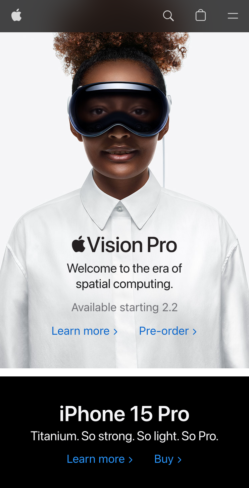

Hick's Law
AG1
AG1AG1 Does a phenomenal job of Embodying Hicks Law, This homepage only presents one clearer option, and that is to purchase or learn more about the specific product that they sell. There is no confusion as to where you can go, but instead clearly displays intuitively where the user should select to begin learning more about the product or buying the productThere is no confusion as to where you can go, but instead clearly displays intuitively where the user should select to begin learning more about the product or buying the product.
White Space and Clean Design
Apple
Apple's homepage Apple is well known for their simplistic and aesthetically pleasing, designs and platforms. Their homepage uses white space to display clear information that indicates your options on the website as well as is easy to understand and draws you in. Their design is sleek and feels clean as you scroll down the page to look at more information it feels as if you are moving into the future as you interact with their websiteTheir, Apple does a good job of using images as white space to draw your eyes into your options for learning more about the products.
Rule of Thirds
Audible
Audibles homepageAudibles homepage, draws your eye to starting for free with their services by using a rule of thirds principal to draw your eye in on the primary information on their homepage trying to get you to start their product for free. they do a good job of making it aesthetically pleasing. The products have a good contrast, making it clear where you should be looking and where the option you should be selecting is. Overall it was a good use of the rule of thirds to draw your eye towards beginning the process of using and purchasing the product.